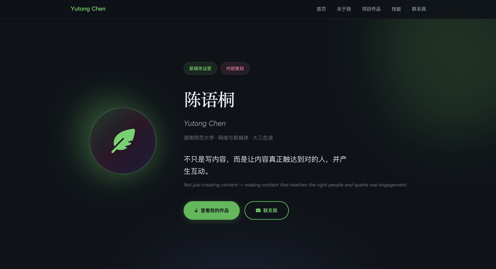
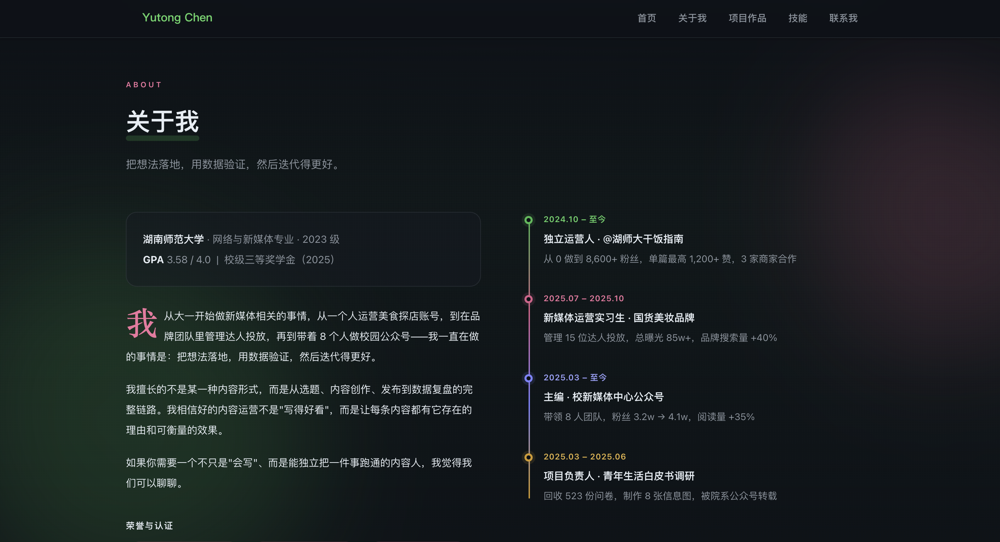
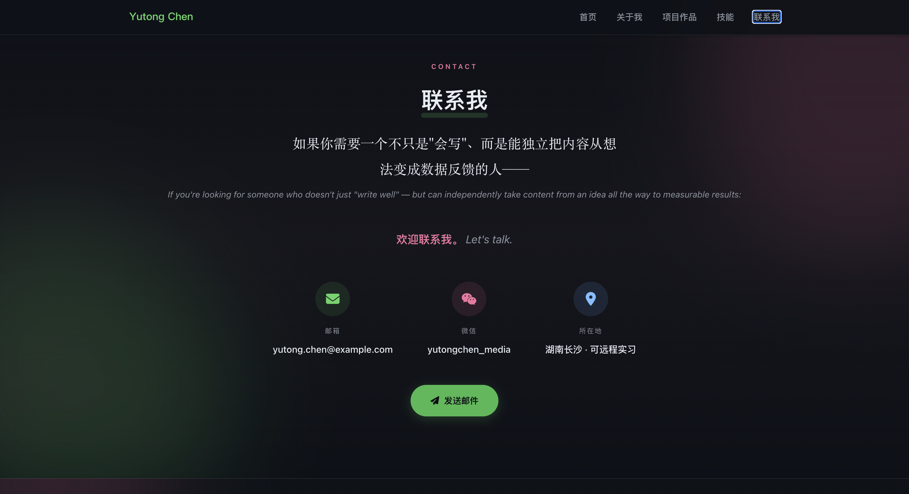
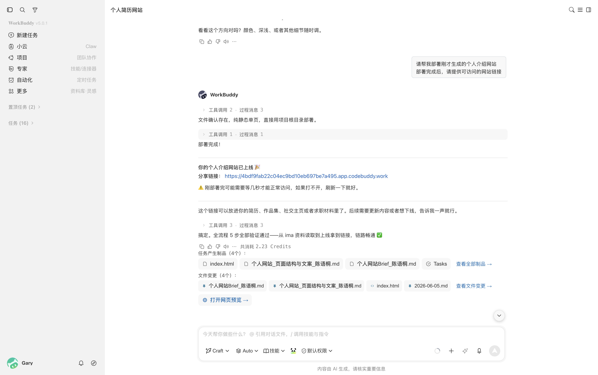
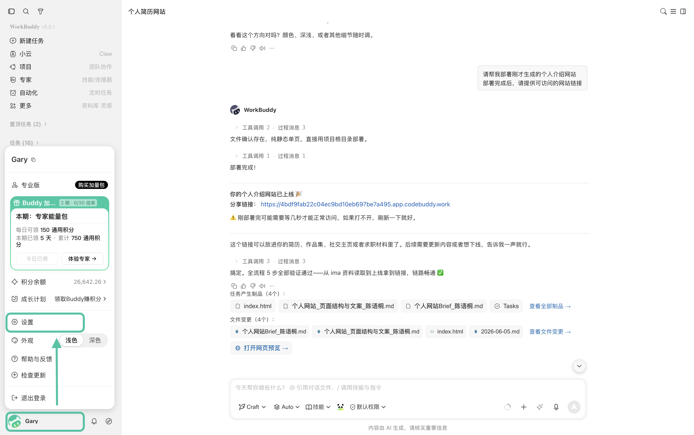
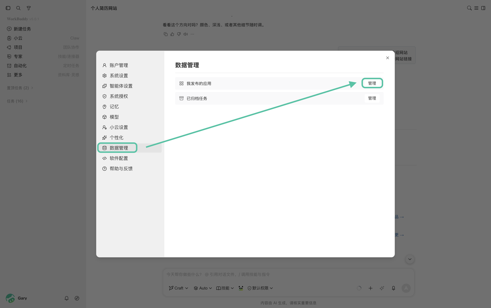

求职展示攻略：用 ima × WorkBuddy 搭建个人介绍网站
本章为进阶教程，如需了解操作方式，请前往 WorkBuddy × ima 功能指引 和 如何用 WorkBuddy 把 ima 知识库越用越厚。
很多同学在求职、申请项目或展示个人作品时，会准备简历、作品集、项目介绍和个人介绍文案。
这些资料通常分散在不同文件里：简历是一份，作品链接是一份，项目经历散在文档或网盘里。
真正要做个人网站时，还需要重新整理经历、筛选作品、组织页面结构和撰写介绍文案。
这时，可以先把简历、作品、项目经历和个人介绍资料保存到 ima，再让 WorkBuddy 基于这些资料生成个人网站。
这样网站内容不需要从零编写，也能减少经历遗漏和表达不一致的问题。
本教程中使用的案例人物，其所有信息由 AI 生成。
一、准备个人资料库
在 ima 中新建一个知识库，放入相关资料。
后续 WorkBuddy 生成网站时，可以直接读取这些资料，整理成适合网页展示的内容。
| 资料类型 | 示例 | 用途 |
|---|---|---|
| 基础信息 | 个人简介、教育经历、联系方式 | 用于生成首页和 About 页面 |
| 简历文件 | 中文简历、英文简历、不同岗位版本简历 | 提取经历、技能和项目亮点 |
| 项目作品 | 项目介绍、作品链接、截图、成果数据 | 用于生成作品集页面 |
| 个人表达 | 自我介绍、求职动机、过往面试稿 | 用于统一网站语气 |
| 视觉参考 | 喜欢的网站风格、配色、排版示例 | 帮助 WorkBuddy 判断设计方向 |
二、生成个人网站 Brief
在生成网站前，先明确网站用途、目标读者、展示重点和页面结构，避免网站内容变成简单的简历搬运。
可以在 WorkBuddy 中选择 ima 个人资料库，并勾选简历、项目作品和个人介绍资料，添加至任务，并让 WorkBuddy 生成个人网站 Brief。
请基于 ima 中的个人简历、项目作品和个人介绍资料，帮我生成一份个人介绍网站 Brief。
请输出：
- 网站应该突出哪些个人优势；
- 首页需要展示哪些核心信息；
- 适合放入哪些项目作品；
- 每个项目应该突出哪些亮点；
- 建议网站包含哪些页面或模块；
- 网站整体语气和视觉风格建议；
- 哪些信息需要我人工核对或补充。
注意： 这一步先不要生成完整网站，只生成网站 Brief。
你可以根据 Brief 结果，和 WorkBuddy 对话修改，直到获得满意的版本。
三、生成网站结构和页面文案
确定网站方向后，可以让 WorkBuddy 生成具体页面结构和文案。
这一步重点是把简历内容改写成更适合网页浏览的表达。
请基于刚才的个人网站 Brief，帮我生成个人介绍网站的页面结构和完整文案。
请输出：
- 网站首页结构；
- 首页主标题和副标题；
- About Me 模块文案；
- 项目作品模块结构；
- 每个项目的标题、简介、亮点和成果；
- 技能或能力模块文案；
- 联系方式模块文案；
- 适合放在网站中的按钮文案；
- 需要人工核对的信息。
四、生成个人网站
最后让 WorkBuddy 根据确认后的页面结构和文案，生成可预览的个人介绍网站。
注：如果有偏好的视觉风格，记得提前放在 ima 中，并标注为"参考案例"。
请基于刚才确认的个人网站结构和页面文案，帮我生成一个个人介绍网站。
要求：
- 网站包含首页、关于我、项目作品、技能能力和联系方式模块；
- 页面风格简洁、专业，适合求职和作品展示；
- 项目作品需要以卡片形式展示；
- 每个项目卡片包含项目名称、简介、我的职责、关键成果和作品链接位置；
- 页面需要适配电脑和手机浏览；
- 请生成可直接预览的网页文件。
生成示例：



五、部署个人网站上线
网站生成后，它还只是在你本地可见，而无法让其他人查看。
这时，你可以让 WorkBuddy 直接完成部署。
部署完成后，你会得到一个可以直接访问的个人网站链接，可以放进简历、作品集、社交主页或求职材料中。
请帮我部署刚才生成的个人介绍网站。部署完成后，请提供可访问的网站链接。

后续如果找不到网站链接、网站有更新或者想删除网站，你可以在 WorkBuddy 的应用管理中，对网站进行管理。

